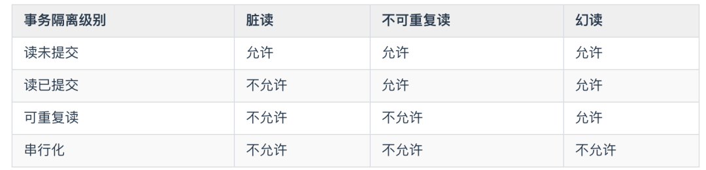

事务就是针对数据库的一组操作，它可以由一条或者多条SQL语句组成，同一个事务的操作具备同步的特点，如果其中有一条语句不能执行的话(或执行失败)，那么所有的语句都不会执行，也就是说，事务中的语句要么都执行，要么都不执行。
注意只有使用innodb引擎的数据库或表才支持事务,MyISAM引擎不支持事务处理
事务操作具有严格的定义，它必须满足ACID：
ACID，指数据库事务正确执行的四个基本要素的缩写。包含：原子性（Atomicity）、一致性（Consistency）、隔离性（Isolation）、持久性（Durability）。
原子性： 原子性是指事务是一个不可再分割的工作单位，事务中的操作要么都发生，要么都不发生。
一致性：一致性是指在事务开始之前和事务结束以后，数据库的完整性约束没有被破坏。这是说数据库事务不能破坏关系数据的完整性以及业务逻辑上的一致性。
即事务必须使数据库从一个一致性状态变换到另一个一致性状态，也就是说一个事务执行之前和执行之后都必须处于一致性状态。
拿转账来说，假设用户A和用户B两者的钱加起来一共是5000，那么不管A和B之间如何转账，转几次账，事务结束后两个用户的钱相加起来应该还得是5000，这就是事务的一致性。
隔离性：隔离性是指并发的事务是相互隔离的。即一个事务内部的操作及正在操作的数据必须封锁起来，不被企图进行修改的事务看到 。这个主要是为了避免多个事务同时进行时，可能出现的脏读、不可重复读、幻读、丢失更新的情况。
持久性：持久性是指在事务完成以后，该事务所对数据库所作的更改便持久的保存在数据库之中，并不会被回滚。 即使出现了任何事故比如断电等，事务一旦提交，则持久化保存在数据库中。
隔离性是当多个用户并发访问数据库时，比如操作同一张表时，数据库为每一个用户开启的事务，不能被其他事务的操作所干扰，多个并发事务之间要相互隔离。
即要达到这么一种效果：对于任意两个并发的事务T1和T2，在事务T1看来，T2要么在T1开始之前就已经结束，要么在T1结束之后才开始，这样每个事务都感觉不到有其他事务在并发地执行。
脏读: 脏读就是一个事务读取到了另一个事务还未提交的数据，另一个事务中数据可能进行了回滚,此时A事务读取的数据可能和数据库中数据是不一致的，此时认为数据是脏数据，读取脏数据过程叫做脏读。
不可重复读: 两次读取的数据不一致(表现在数据更新，数据内容不一致，update)，当事务A第一次读取事务后，事务B对事务A读取的数据进行修改，事务A中再次读取的数据和之前读取的数据不一致，此过程称为不可重复读。
虚读（幻读）: 两次读取的数据一致(表现在数据新增或删除，数据量不一致，insert & delete)，事务A按照特定条件查询出结果，事务B新增了一条符合条件的数据。事务 A 中查询的数据和数据库中的数据不一致的，事务 A 好像出现了幻觉，这种情况称为幻读。 主要针对的操作是新增或删除。
丢失更新: 两个事务对同一条记录进行操作，后提交的事务，将先提交的事务的修改的数据覆盖了
为了防止出现脏读、不可重复读、幻读等情况，我们就需要根据我们的实际需求来设置数据库的隔离级别。
| 隔离级别 | 含义 |
|---|---|
| Serializable | 可避免脏读、不可重复读、虚读情况的发生。（串行化） |
| Repeatable read | 可避免脏读、不可重复读情况的发生。（可重复读）不可以避免虚读 |
| Read committed | 可避免脏读情况发生（读已提交） |
| Read uncommitted | 最低级别，以上情况均无法保证。(读未提交) |
如何使用这些隔离级别，那就需要根据业务的实际情况来进行判断了。
读未提交（Read Uncommitted）
读未提交，顾名思义，就是可以读到未提交的内容。
因此，在这种隔离级别下，查询是不会加锁的，也由于查询的不加锁，所以这种隔离级别的一致性是最差的，可能会产生“脏读”、“不可重复读”、“幻读”。
如无特殊情况，基本是不会使用这种隔离级别的。
读已提交（Read Committed）
读已提交，顾名思义，就是只能读到已经提交了的内容。
这是各种系统中最常用的一种隔离级别，也是SQL Server和Oracle的默认隔离级别。这种隔离级别能够有效的避免脏读，但除非在查询中显式的加锁，如：
select * from T where ID=2 lock in share mode;
select * from T where ID=2 for update;不然，普通的查询是不会加锁的。
那为什么“读提交”同“读未提交”一样，都没有查询加锁，但是却能够避免脏读呢？
这就要说道另一个机制“快照（snapshot）”，而这种既能保证一致性又不加锁的读也被称为“快照读（Snapshot Read）”
假设没有“快照读”，那么当一个更新的事务没有提交时，另一个对更新数据进行查询的事务会因为无法查询而被阻塞，这种情况下，并发能力就相当的差。
而“快照读”就可以完成高并发的查询，不过，“读提交”只能避免“脏读”，并不能避免“不可重复读”和“幻读”。
可重复读(Repeated Read)
可重复读，顾名思义，就是专门针对“不可重复读”这种情况而制定的隔离级别，自然，它就可以有效的避免“不可重复读”。而它也是MySql的默认隔离级别。
在这个级别下，普通的查询同样是使用的“快照读”，但是，和“读提交”不同的是，当事务启动时，就不允许进行“修改操作（Update）”了，而“不可重复读”恰恰是因为两次读取之间进行了数据的修改，因此，“可重复读”能够有效的避免“不可重复读”，但却避免不了“幻读”，因为幻读是由于“插入或者删除操作（Insert or Delete）”而产生的。
串行化（Serializable）
这是数据库最高的隔离级别，这种级别下，事务“串行化顺序执行”，也就是一个一个排队执行。
这种级别下，“脏读”、“不可重复读”、“幻读”都可以被避免，但是执行效率奇差，性能开销也最大，所以基本没人会用。

其中隔离级别由低到高是：读未提交 < 读已提交 < 可重复读 < 串行化
隔离级别越高，越能够保证数据的完整性和一致性，但是对并发的性能影响越大。大多数数据库的默认级别是读已提交(Read committed)，比如 Sql Server、Oracle ，但是 MySQL 的默认隔离级别是 可重复读(repeatable-read)。
1、设置隔离级别：
设置隔离级别分为设置全局的隔离级别与设置当前的隔离级别
全局设置，已存在的session不会生效，以后的新session会生效（以读未提交举例）：
set global transaction isolation level read uncommitted;单独设置当前连接：
set session transaction isolation level read uncommitted;2 、在MySQL数据库中 查看 当前事务的隔离级别：
select @tx_isolation;